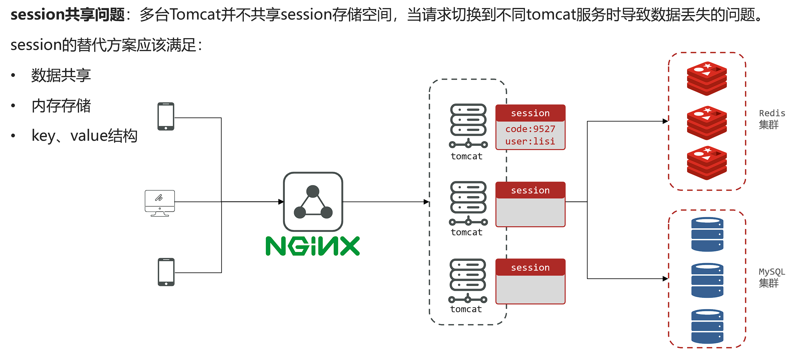
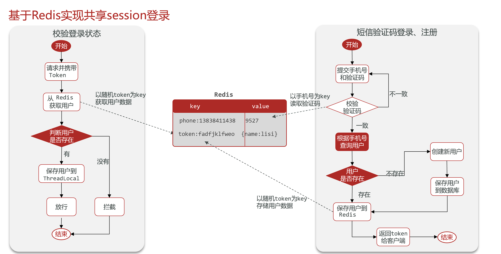
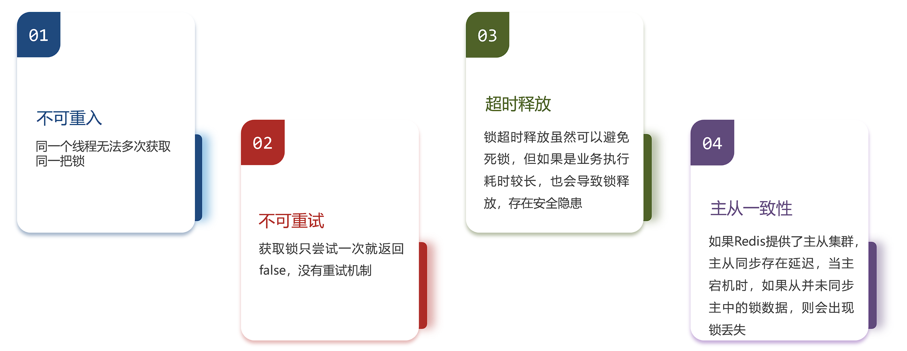
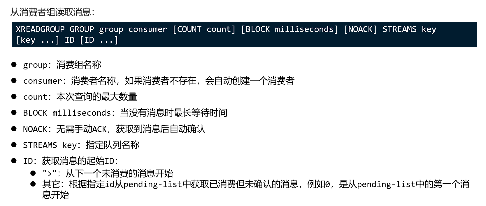

Redis应用场景
短信登录¶



Redis实现缓存¶
缓存就是数据交换的缓冲区（称作Cache [ kæʃ ] ），是存贮数据的临时地方，一般读写性能较高
优势：
- 降低服务器负载
- 提高响应速度
劣势：
- 数据不一致
- 增加维护复杂度


缓存更新策略¶

解决方案：
Cache Aside Pattern：由缓存的调用者，在更新数据库的同时更新缓存（推荐）Read/Write Through Pattern：缓存与数据库整合为一个服务，由服务来维护一致性。调用者调用该服务，无需关心缓存一致性问题。Write Behind Caching Pattern：调用者只操作缓存，由其它线程异步的将缓存数据持久化到数据库，保证最终一致。
操作缓存和数据库时有三个问题需要考虑：
1.删除缓存还是更新缓存？
-
更新缓存：每次更新数据库都更新缓存，无效写操作较多❌
-
删除缓存：更新数据库时让缓存失效，查询时再更新缓存✔
2.如何保证缓存与数据库的操作的同时成功或失败？
-
单体系统，将缓存与数据库操作放在一个事务
-
分布式系统，利用TCC等分布式事务方案
3.先操作缓存还是先操作数据库？
-
先写数据库，然后再删除缓存
-
要确保数据库与缓存操作的原子性
缓存穿透¶
缓存穿透是指客户端请求的数据在缓存中和数据库中都不存在，这样缓存永远不会生效，这些请求都会到达数据库。
常见的解决方案有两种：
-
缓存空对象
- 优点：实现简单，维护方便
- 缺点：
- 额外的内存消耗
- 可能造成短期的不一致
-
布隆过滤
- 优点：内存占用较少，没有多余key
- 缺点：
- 实现复杂
- 存在误判可能

可行方案：
- 缓存null值
- 布隆过滤
- 增强id的复杂度，避免被猜测id规律
- 做好数据的基础格式校验
- 加强用户权限校验
- 做好热点参数的限流
缓存雪崩¶
缓存雪崩是指在同一时段大量的缓存key同时失效或者Redis服务宕机，导致大量请求到达数据库，带来巨大压力。
解决方案：
- 给不同的Key的TTL添加随机值
- 利用Redis集群提高服务的可用性
- 给缓存业务添加降级限流策略
- 给业务添加多级缓存
缓存击穿¶
缓存击穿问题也叫热点Key问题，就是一个被高并发访问并且缓存重建业务较复杂的key突然失效了，无数的请求访问会在瞬间给数据库带来巨大的冲击。
常见的解决方案有两种：
- 互斥锁
- 逻辑过期
| 解决方案 | 优点 | 缺点 |
|---|---|---|
| 互斥锁 | 没有额外内存消耗 保证一致性 实现简单 |
线程需要等待，性能受影响 可能有死锁风险 |
| 逻辑过期 | 线程无需等待，性能较好 | 不保证一致性 有额外内存消耗 实现复杂 |
全局唯一ID¶
全局ID生成器，是一种在分布式系统下用来生成全局唯一ID的工具，需要满足以下特性：
- 唯一性
- 高可用
- 高性能
- 递增性
- 安全性
常见的实现方式包括UUID、Snowflake算法等。
UUID¶
UUID 是一个128位的标识符，通常表示为32个十六进制字符，分为5段（8-4-4-4-12）。UUID 的生成基于时间戳、随机数或硬件地址等，确保全局唯一性。
示例：
550e8400-e29b-41d4-a716-446655440000
优点：
- 无需中心化服务，分布式生成。
- 全球唯一性高。
缺点：
- 长度较长（36字符）。
- 无序，不适合作为数据库主键（可能导致索引碎片）。
Snowflake算法¶
Snowflake 是 Twitter 开源的分布式ID生成算法，生成一个64位的ID，结构如下：
- 1位：符号位（固定为0）。
- 41位：时间戳（毫秒级，可用69年）。
- 10位：机器ID（支持1024个节点）。
- 12位：序列号（每毫秒可生成4096个ID）。
示例：
1234567890123456789
优点：
- 短小精悍（64位整数）。
- 时间有序，适合作为数据库主键。
- 高性能，支持高并发。
缺点：
- 依赖系统时钟，时钟回拨可能导致ID冲突。
- 需要管理机器ID的分配。
Redis自增¶
Redis自增ID生成器利用Redis的原子性INCR命令生成全局唯一ID，结合时间戳和序列号保证ID的唯一性和递增性。
实现原理：
- 时间戳部分：使用自定义起始时间戳（如2025年1月1日）作为基准，计算当前时间与基准时间的秒数差值，作为ID的高位部分
- 序列号部分：使用Redis的INCR命令对每天的计数器进行原子性自增，作为ID的低位部分
- 位运算组合：将时间戳左移32位，与序列号进行按位或运算，生成最终的64位ID
ID结构（64位）：
- 32位时间戳：相对于起始时间的秒数（可用68年）
- 32位序列号：每天重置的自增序列（每天可生成42亿个ID）
优点：
- 高性能：基于Redis的内存操作，性能极高
- 全局唯一：时间戳+日期+序列号确保唯一性
- 趋势递增：时间维度上ID呈递增趋势
- 信息可读：可从ID中解析出生成时间
- 高可用：支持Redis集群部署
缺点：
- 依赖Redis：Redis故障会影响ID生成
- 时钟敏感：依赖系统时钟的准确性
@Component
@RequiredArgsConstructor
public class RedisIdWorker {
private final StringRedisTemplate redisTemplate;
// 自定义起始时间戳（2025年1月1日0时0分0秒）
private final long BEGIN_TIME_STAMP = 1735689600L;
public long nextId(String prefix) {
// 1. 生成时间戳
LocalDateTime now = LocalDateTime.now();
long epochSecond = now.toEpochSecond(ZoneOffset.UTC);
long nowEpochSecond = epochSecond - BEGIN_TIME_STAMP;
// 2. 生成序列号（每天一个key，避免单key过大）
String date = now.format(DateTimeFormatter.ofPattern("yyyyMMdd"));
long increment = redisTemplate.opsForValue().increment("icr:" + prefix + ":" + date);
// 3. 拼接并返回（时间戳左移32位 + 序列号）
return nowEpochSecond << 32 | increment;
}
}
超卖问题¶
超卖问题（Overselling）是电商、秒杀、库存管理等场景中常见的核心问题，指系统实际销售数量超过库存数量，导致订单无法履约。
原因：
- 并发请求冲突
- 多个用户同时请求购买同一商品，系统未正确处理并发扣减库存。
- 数据库更新延迟
- 数据库读写分离时，从库同步延迟导致读取到旧库存数据。
- 缓存与数据库不一致
- 缓存层（如 Redis）与数据库的库存数据未同步。
- 非原子性操作
- 查询库存、扣减库存分步执行，中间过程被其他请求插入。
解决方案：
数据库层面：锁机制
- 悲观锁（Pessimistic Lock）
通过
SELECT ... FOR UPDATE锁定记录，确保串行操作。
BEGIN;
SELECT stock FROM products WHERE id=1 FOR UPDATE;
UPDATE products SET stock = stock - 1 WHERE id=1;
COMMIT;
缺点：高并发下性能差，可能引发死锁。
- 乐观锁（Optimistic Lock） 使用版本号或库存字段本身作为条件更新。
UPDATE products
SET stock = stock - 1, version = version + 1
WHERE id=1 AND stock > 0 AND version = {current_version};
优点：无锁竞争，适合高并发。 缺点：需处理更新失败（如重试或提示用户）。
分布式锁
- Redis 锁
使用
SET key value NX EX实现原子锁：
lock = redis.set("product_1_lock", "locked", nx=True, ex=5)
if lock:
try:
# 扣减库存逻辑
finally:
redis.delete("product_1_lock")
注意：需解决锁过期和误删问题（如 Redlock 算法）。
缓存层原子操作
- Redis 原子扣减
利用 Redis 的原子命令（如
DECR或 Lua 脚本）：
-- Lua 脚本（原子扣减库存）
local stock = tonumber(redis.call('GET', KEYS[1]))
if stock > 0 then
redis.call('DECR', KEYS[1])
return 1 -- 成功
else
return 0 -- 失败
end
优点：高性能，避免直接穿透到数据库。
- 预扣库存（预占机制） 用户下单时先在 Redis 中扣减库存，异步同步到数据库：
if redis.decr("product_1_stock") >= 0:
# 创建订单，异步更新数据库
else:
# 恢复库存：redis.incr("product_1_stock")
消息队列削峰
- 将请求放入队列（如 Kafka、RabbitMQ），由消费者顺序处理：
# 生产者（用户请求入队）
producer.send("order_topic", {"user_id": 123, "product_id": 1})
# 消费者（顺序扣减库存）
consumer.subscribe("order_topic")
for message in consumer:
process_order(message)
优点：流量削峰，保证最终一致性。
一人一单¶
单实例部署¶
某些业务只允许用户进行一次交易
但当一个用户同一时间发起多个请求时，就有可能发生一人多单问题（多个线程都查询到数据库中并没有订单存在，都可以创建订单）
可以对数据操作代码加锁同步
synchronized (userId.toString().intern()) {
// 获取代理对象，解决spring事务失效问题
IVoucherOrderService proxy =(IVoucherOrderService) AopContext.currentProxy();
return proxy.createOrder(id, userId);
}
Info
以上代码只对同一个用户加锁，避免不同用户被阻塞的性能问题（intern()将字符串加入字符串常量池，避免同一个用户id有多个对象，同步失效）
Spring的事务管理基于AOP代理对象实现，如果在类的方法内调用自身的方法，等同于this.xxx()，并没有通过代理对象实现事务增强，解决方案为先获取代理对象，然后再通过代理对象调用该方法
需要引入aspectjweaver依赖，并在启动类上加上@EnableAspectJAutoProxy(exposeProxy = true)注解
多实例部署¶
以上方案在多实例集群模式下仍会发生线程安全问题，原因是多个实例各自都有自身的JVM实现同步锁，无法共享
解决方案：
分布式锁：满足分布式系统或集群模式下多进程可见并且互斥的锁
- 多进程可见
- 互斥
- 高性能
- 安全性
- 高可用
常见实现方式
| MySQL | Redis | Zookeeper | |
|---|---|---|---|
| 互斥 | 利用本身互斥锁机制 | 利用setnx这类互斥命令 | 利用节点唯一性和有序性实现 |
| 高可用 | 优秀 | 优秀 | 优秀 |
| 高性能 | 一般 | 优秀 | 一般 |
| 安全性 | 断开连接自动释放锁 | 锁到期自动释放，避免死锁 | 临时节点断开连接自动释放 |
基于Redis的分布式锁¶
简单实现¶
实现分布式锁时需要实现的两个基本方法：
- 获取锁：
SET lock thread1 EX 10 NX
Tip
EX参数设置过期时间，NX参数实现与SETNX相同的功能
Danger
不建议直接使用SETNX,因为无法同时设置过期时间，可能发生获得锁后服务宕机，而未设置过期时间，最终导致死锁。
- 释放锁：
DEL lock

示例：
@Override
public boolean tryLock(long timeout) {
// 获取当前线程ID
long threadId = Thread.currentThread().getId();
Boolean success = stringRedisTemplate.opsForValue()
.setIfAbsent(KEY_PREFIX + name, threadId + "", timeout, TimeUnit.SECONDS);
return Boolean.TRUE.equals(success);
}
@Override
public void unlock() {
// 释放锁
stringRedisTemplate.delete(KEY_PREFIX + name);
}
锁误删问题¶
主要发生在某个线程阻塞时锁被超时释放了，其他线程就可以获得锁，当被阻塞的线程恢复后就会删除不属于自己的锁

解决方案：
为线程的锁加入唯一标识，释放前判断锁是否属于自己
原子性问题¶
如果查询和删除锁不能原子性执行，仍然有可能发生锁误删问题

Lua脚本
Redis提供了Lua脚本功能，在一个脚本中编写多条Redis命令，确保多条命令执行时的原子性。Lua是一种编程语言，基本语法可以参考网站
Redis可以通过如下命令执行Lua脚本
EVAL "<脚本内容>"
-- 示例
EVAL "return redis.call('set','key','value')" 0
Note
参数0表示需要的key类型的参数个数
脚本中的key、value可以作为参数传递。key类型参数会放入KEYS数组，其它参数会放入ARGV数组，在脚本中可以从KEYS和ARGV数组获取这些参数：
EVAL "return redis.call('set',KEYS[1],ARGV[1])" 1 key value
释放锁脚本示例：
-- 获取key
local key = KEYS[1]
-- 获取线程ID
local threadId = ARGV[1]
local id = redis.call('get',key)
if(id == threadId)
then
return redis.call('del',key)
end
return 0
private static final DefaultRedisScript<Long> UNLOCK_SCRIPT;
static {
UNLOCK_SCRIPT = new DefaultRedisScript<>();
UNLOCK_SCRIPT.setLocation(new ClassPathResource("unlock.lua"));
UNLOCK_SCRIPT.setResultType(Long.class);
}
// 执行Lua脚本释放锁
stringRedisTemplate.execute(
UNLOCK_SCRIPT,
Collections.singletonList(KEY_PREFIX + name),
ID_PREFIX + Thread.currentThread().getId()
);
Redission¶
基于SETNX实现的分布式锁存在下面的问题

Redisson是一个在Redis的基础上实现的Java驻内存数据网格（In-Memory Data Grid）。它不仅提供了一系列的分布式的Java常用对象，还提供了许多分布式服务，其中就包含了各种分布式锁的实现。
官网地址： https://redisson.org

快速入门¶
引入依赖
<dependency>
<groupId>org.redisson</groupId>
<artifactId>redisson</artifactId>
<version>3.36.0</version>
</dependency>
配置Redisson
@Configuration
public class RedisConfig {
@Bean
public RedissonClient redisson() {
// 配置Redisson
Config config = new Config();
config.useSingleServer()
.setAddress("redis://localhost:6379")
.setPassword("123456");
// 创建Redisson客户端
return Redisson.create(config);
}
}
在业务中注入RedissonClient然后获取锁即可
可重入锁原理¶
利用hash结构记录线程id和重入次数

获取锁
local key = KEYS[1]; -- 锁的key
local threadId = ARGV[1]; -- 线程唯一标识
local releaseTime = ARGV[2]; -- 锁的自动释放时间
-- 判断是否存在
if(redis.call('exists', key) == 0) then
-- 不存在, 获取锁
redis.call('hset', key, threadId, '1');
-- 设置有效期
redis.call('expire', key, releaseTime);
return 1; -- 返回结果
end;
-- 锁已经存在，判断threadId是否是自己
if(redis.call('hexists', key, threadId) == 1) then
-- 不存在, 获取锁，重入次数+1
redis.call('hincrby', key, threadId, '1');
-- 设置有效期
redis.call('expire', key, releaseTime);
return 1; -- 返回结果
end;
return 0; -- 代码走到这里,说明获取锁的不是自己，获取锁失败
释放锁
local key = KEYS[1]; -- 锁的key
local threadId = ARGV[1]; -- 线程唯一标识
local releaseTime = ARGV[2]; -- 锁的自动释放时间
-- 判断当前锁是否还是被自己持有
if (redis.call('HEXISTS', key, threadId) == 0) then
return nil; -- 如果已经不是自己，则直接返回
end;
-- 是自己的锁，则重入次数-1
local count = redis.call('HINCRBY', key, threadId, -1);
-- 判断是否重入次数是否已经为0
if (count > 0) then
-- 大于0说明不能释放锁，重置有效期然后返回
redis.call('EXPIRE', key, releaseTime);
return nil;
else -- 等于0说明可以释放锁，直接删除
redis.call('DEL', key);
return nil;
end;
重试机制和看门狗¶
•可重试：利用信号量和PubSub功能实现等待、唤醒，获取锁失败的重试机制
•超时续约：利用watchDog，每隔一段时间（releaseTime / 3），重置超时时间
主从一致性¶
原理：多个独立的Redis节点，必须在所有节点都获取重入锁，才算获取锁成功
缺陷：运维成本高、实现复杂
基于Redis的消息队列¶
消息队列（Message Queue），字面意思就是存放消息的队列。最简单的消息队列模型包括3个角色：
- 消息队列：存储和管理消息，也被称为消息代理（Message Broker）
- 生产者：发送消息到消息队列
- 消费者：从消息队列获取消息并处理消息
Redis提供了三种不同的方式来实现消息队列：
- list结构：基于List结构模拟消息队列
- PubSub：基本的点对点消息模型
- Stream：比较完善的消息队列模型
使用list实现¶
Redis的list数据结构是一个双向链表，很容易模拟出队列效果。队列是入口和出口不在一边，因此我们可以利用：LPUSH 结合 RPOP、或者 RPUSH 结合 LPOP来实现。
不过要注意的是，当队列中没有消息时RPOP或LPOP操作会返回null，并不像JVM的阻塞队列那样会阻塞并等待消息。因此这里应该使用BRPOP或者BLPOP来实现阻塞效果。
优点：
- 利用Redis存储，不受限于JVM内存上限
- 基于Redis的持久化机制，数据安全性有保证
- 可以满足消息有序性
缺点：
- 无法避免消息丢失
- 只支持单消费者
使用PubSub实现¶
PubSub（发布订阅）是Redis2.0版本引入的消息传递模型。消费者可以订阅一个或多个channel，生产者向对应channel发送消息后，所有订阅者都能收到相关消息。
SUBSCRIBE channel [channel]：订阅一个或多个频道PUBLISH channel msg：向一个频道发送消息PSUBSCRIBE pattern[pattern]：订阅与pattern格式匹配的所有频道
优点：
- 采用发布订阅模型，支持多生产、多消费
缺点：
- 不支持数据持久化
- 无法避免消息丢失
- 消息堆积有上限，超出时数据丢失
使用Stream实现¶
Stream是Redis5.0引入的一种数据类型，可以实现功能较完善的消息队列
发送消息

Example
xadd user * name ysh age 22
读取消息

Example
xread cout 1 block 2000 streams user $ 阻塞式读取
注意
当我们指定起始ID为$时，代表读取最新的消息，如果我们处理一条消息的过程中，又有超过1条以上的消息到达队列，则下次获取时也只能获取到最新的一条，会出现漏读消息的问题。
STREAM类型消息队列的XREAD命令特点：
- 消息可回溯
- 一个消息可以被多个消费者读取
- 可以阻塞读取
- 有消息漏读的风险
消费者组

## 创建消费者组
xgroup create key groupName ID
## 删除消费者组
xgroup destroy key groupName
## 将消费者添加到消费者组
xgroup createconsumer key groupName consumerName
## 删除消费者组中的消费者
xgroup delconsumer key groupName consumerName

Feed流模式（推流）¶
Feed流产品有两种常见的模式：
- TimeLine:不做内容筛选，简单的按照内容发布时间排序，常用于好友或关注。例如朋友圈
- 优点：信息全面，不会有缺失，并且实现也相对简单
- 优点：信息噪音多，用户不一定感兴趣，内容获取效率低
- 智能排序:利用智能算法屏蔽违规的、用户不感兴趣的内容，推送用户感兴趣的信息来吸引用户
- 优点：投喂用户感兴趣的信息，用户黏度很高，容易沉迷
- 缺点：算法如果不精准，可能起反作用
推送方式：
-
拉模式：消费端主动拉取（读要求高，不推荐）
-
推模式：生产者主动推送（写要求高，用户量少时推荐）
-
推拉结合：以上两者结合（用户千万以上推荐）
实现方式
创建发件箱和收件箱，按照推送方式将推送内容的标识（通常为ID）发送到对应位置
Warning
Feed流中的数据会不断更新，数据的角标也会变化，所以不能使用传统的分页查询 应该采用滚动分页法，即每次查询记录最后一条数据的值而不是角标，下一次查询再从该元素开始 每次查询时需要的参数为上次查询最后一条记录的值，与上一条记录值相同的记录数（offset）
GEO数据¶
GEO就是Geolocation的简写形式，代表地理坐标。Redis在3.2版本中加入了对GEO的支持，允许存储地理坐标信息，帮助我们根据经纬度来检索数据。常见的命令有：
GEOADD：添加一个地理空间信息，包含：经度（longitude）、纬度（latitude）、值（member）
GEODIST：计算指定的两个点之间的距离并返回
GEOHASH：将指定member的坐标转为hash字符串形式并返回
GEOPOS：返回指定member的坐标
GEORADIUS：指定圆心、半径，找到该圆内包含的所有member，并按照与圆心之间的距离排序后返回。6.2以后已废弃
GEOSEARCH：在指定范围内搜索member，并按照与指定点之间的距离排序后返回。范围可以是圆形或矩形。6.2.新功能
GEOSEARCHSTORE：与GEOSEARCH功能一致，不过可以把结果存储到一个指定的key。 6.2.新功能
BitMap¶
Redis中利用string类型数据结构实现BitMap，因此最大上限是512M，转换为bit则是 2^32个bit位。
BitMap的操作命令有：
SETBIT：向指定位置（offset）存入一个0或1
GETBIT ：获取指定位置（offset）的bit值
BITCOUNT ：统计BitMap中值为1的bit位的数量
BITFIELD ：操作（查询、修改、自增）BitMap中bit数组中的指定位置（offset）的值
BITFIELD_RO ：获取BitMap中bit数组，并以十进制形式返回
BITOP ：将多个BitMap的结果做位运算（与 、或、异或）
BITPOS ：查找bit数组中指定范围内第一个0或1出现的位置
HyperLogLog&&UV统计¶
-
UV：全称Unique Visitor，也叫独立访客量，是指通过互联网访问、浏览这个网页的自然人。1天内同一个用户多次访问该网站，只记录1次。
-
PV：全称Page View，也叫页面访问量或点击量，用户每访问网站的一个页面，记录1次PV，用户多次打开页面，则记录多次PV。往往用来衡量网站的流量。
UV统计在服务端做会比较麻烦，因为要判断该用户是否已经统计过了，需要将统计过的用户信息保存。但是如果每个访问的用户都保存到Redis中，数据量会非常大。
Hyperloglog(HLL)是从Loglog算法派生的概率算法，用于确定非常大的集合的基数，而不需要存储其所有值。相关算法原理可以参考：https://juejin.cn/post/6844903785744056333#heading-0
Redis中的HLL是基于string结构实现的，单个HLL的内存永远小于16kb，内存占用低，但是其测量结果是概率性的，有小于0.81％的误差。不过对于UV统计来说，这完全可以忽略。
// 测试代码
@Test
public void testHyperLogLog() {
String[] values = new String[10000];
int j;
for (int i = 0; i < 1000000; i++) {
j = i % 10000;
values[j] = "user_" + i;
if (j == 9999) {
stringRedisTemplate.opsForHyperLogLog().add("hll", values);
}
}
Long hll = stringRedisTemplate.opsForHyperLogLog().size("hll");
System.out.println("hll = " + hll);
}